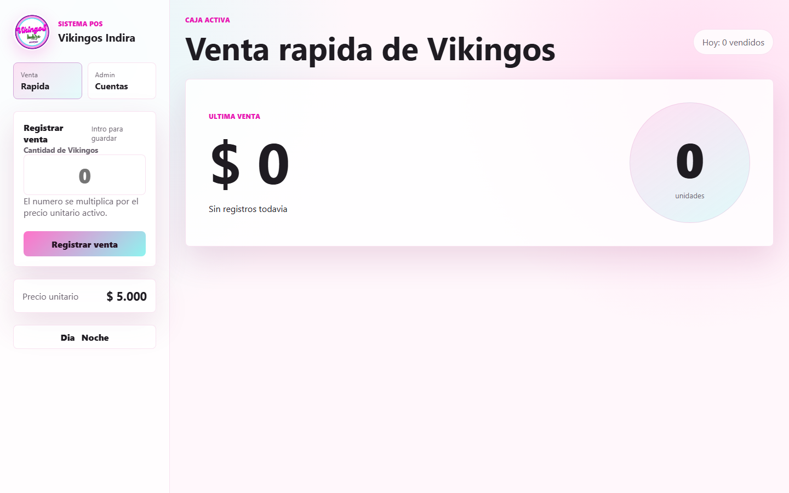

Las ventas no dependen de una conexión.
Punto de venta 100% local
Tu negocio sigue funcionando, incluso cuando Internet no.
Vende, controla inventario y cierra caja desde un sistema rápido, privado y hecho para trabajar todos los días.
Descargar para Windows
Windows 10/11 · x64 · Sin cuotas
- Funciona sin Internet
- Instalación sencilla
- Datos en tu computador

✓
Listo para venderBase local protegida
Tu operación vive en tu computador.
Crea y restaura copias verificadas.
Un Setup.exe y acceso directo.
Todo bajo control
Lo esencial para vender.
Nada que estorbe.
↗
Ventas ágiles
Busca productos, registra pagos y descuenta existencias en una sola operación segura.
Venta actual$ 24.000
▦
Inventario claro
Existencias y movimientos sin hojas dispersas.
◫
Caja ordenada
Aperturas, cierres, ingresos, retiros y gastos trazables.
● Caja abierta
⌁
Reportes que sí ayudan
Consulta ventas por periodo y exporta productos, inventario o ventas en CSV.
Así de simple
Del instalador a tu primera venta.
- 1Instala
Abre el Setup.exe y crea el acceso directo.
- 2Configura
Registra tu negocio, moneda y administrador.
- 3Vende
Todo queda guardado de forma local.
Privacidad por diseño
Tus datos se quedan contigo.
No necesitas cuentas en la nube ni servidores externos. La información operativa se guarda en una base SQLite local con transacciones, verificación de integridad y copias seguras.
- Contraseñas y PIN protegidos con hashing
- Recuperación antes de cada restauración
- Datos separados de los archivos del programa
Base local
Ventas
Inventario
Backups
Requisitos
Preparado para tu PC.
- Sistema
- Windows 10 u 11
- Arquitectura
- 64 bits (x64)
- Internet
- No requerido al usarlo
- Base de datos
- Incluida y automática
Disponible para Windows
Empieza a vender
sin depender de Internet.
El instalador incluye lo necesario para comenzar. Tus datos permanecen en tu computador.
Vikingos Indira POSBuscando la versión disponible más reciente…
Preparando descarga…Ver descargas disponiblesPreguntas frecuentes
Antes de instalar.
¿Funciona realmente sin Internet?
Sí. Las ventas, productos, inventario, caja, usuarios y backups trabajan de forma local. Internet solo se usa para descargar una nueva versión.
¿Debo instalar o configurar SQLite?
No. La aplicación crea y actualiza la base de datos automáticamente en su primera ejecución.
¿Dónde quedan mis datos?
En la carpeta de datos de la aplicación de tu usuario de Windows, separada del directorio donde se instala el programa.
¿Puedo guardar una copia fuera del computador?
Sí. Puedes exportar un backup verificado y guardarlo en una memoria USB u otra ubicación segura.